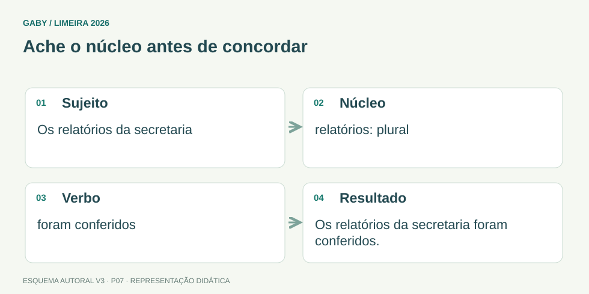

Objetivos do módulo
- Aplicar a concordância verbal com diferentes tipos de sujeito.
- Reconhecer verbos impessoais, especialmente haver e fazer.
- Aplicar concordância nominal em construções frequentes.
- Resolver sujeito posposto, sujeito oracional e sujeito composto ligado por “e”, “ou”, “nem” e “com”.
- Concordar o verbo com coletivos, expressões partitivas, “mais de um”, numerais, frações e porcentagens.
- Aplicar a concordância com pronomes de tratamento, “que”, “quem”, “um dos que” e “é que”.
- Distinguir voz passiva sintética de índice de indeterminação do sujeito.
- Aplicar as regras do verbo ser e da indicação de horas.
- Decidir quando anexo, quite, obrigado, mesmo, meio, bastante, só, caro e adjetivos compostos variam; reconhecer a silepse.
Ache o núcleo antes de concordar

Descrição em texto do esquema
- Sujeito: Os relatórios da secretaria
- Núcleo: relatórios: plural
- Verbo: foram conferidos
- Resultado: Os relatórios da secretaria foram conferidos.
Oficina visual · aplique o esquema
Complete: “A lista de documentos ___ atualizada.” Use “foi” ou “foram” e justifique.
Atividade autoral complementar da V3. Registre sua resposta; a resolução está no arquivo de gabarito e revisão.
Mapa do conteúdo
- 1. Regra geral verbal
- 2. Sujeito composto
- 3. Verbos impessoais
- 4. Concordância nominal
- 5. Coletivos, expressões partitivas, numerais e porcentagens
- 6. Pronomes: tratamento, relativos “que” e “quem” e o realce “é que”
- 7. Partícula “se”: voz passiva sintética × índice de indeterminação
- 8. Verbo ser e indicação de horas
- 9. Silepse: concordância com a ideia
1. Regra geral verbal
O verbo concorda em número e pessoa com o núcleo do sujeito. “Os documentos chegaram”; “A documentação chegou”. Antes de olhar o substantivo mais próximo do verbo, identifique o núcleo real do sujeito.
Como achar o núcleo do sujeito
O núcleo é a palavra principal do sujeito. Uma dica segura: o núcleo nunca vem introduzido por preposição. Tudo o que vem depois de “de”, “da”, “dos”, “com”, “em” etc. dentro do sujeito é acessório e não manda no verbo.
| Sujeito | Núcleo | Concordância correta | Erro comum |
|---|---|---|---|
| O conjunto de normas internas | conjunto (singular) | O conjunto de normas internas foi revisado. | O conjunto de normas internas foram revisados. |
| A lista de convidados da festa | lista (singular) | A lista de convidados da festa saiu ontem. | A lista de convidados da festa saíram ontem. |
| Os pedidos da escola municipal | pedidos (plural) | Os pedidos da escola municipal chegaram. | Os pedidos da escola municipal chegou. |
Sujeito posposto (depois do verbo)
Quando o sujeito vem depois do verbo, a regra é a mesma: o verbo concorda com ele. O erro acontece porque, lendo da esquerda para a direita, o verbo aparece antes de sabermos quem é o sujeito. Isso é muito comum com verbos como chegar, faltar, sobrar, restar, bastar, caber, ocorrer, surgir, existir e seguir.
| Errado | Correto | Por quê |
|---|---|---|
| Chegou as encomendas. | Chegaram as encomendas. | Sujeito: as encomendas (plural). |
| Sobrou duas vagas no ônibus. | Sobraram duas vagas no ônibus. | Sujeito: duas vagas. |
| Coube todos os livros na caixa. | Couberam todos os livros na caixa. | Sujeito: todos os livros. |
| Ocorreu falhas no sistema. | Ocorreram falhas no sistema. | Sujeito: falhas. |
| Segue anexo as notas fiscais. | Seguem anexas as notas fiscais. | Sujeito: as notas fiscais; o verbo e o adjetivo “anexas” concordam com ele. |
Sujeito oracional
Às vezes o sujeito é uma oração inteira, geralmente com verbo no infinitivo. Nesse caso, o verbo principal fica na terceira pessoa do singular, mesmo que dentro da oração apareça uma palavra no plural.
- “Convém revisar os contratos.” (O que convém? Revisar os contratos: a oração é o sujeito.)
- “Falta assinar três termos.” (O que falta? Assinar três termos.)
- “Cabe aos fiscais verificar as notas.”
| Errado | Correto | Compare |
|---|---|---|
| Faltam conferir os boletos. | Falta conferir os boletos. | “Faltam dois boletos.” (aqui o sujeito é “dois boletos”, sem verbo: plural) |
| Convêm analisar os dados. | Convém analisar os dados. | “Os dados convêm ao estudo.” (sujeito plural “os dados”) |
Nomes próprios com forma de plural
Nomes próprios de lugar que têm forma de plural seguem o artigo:
- com artigo no plural, verbo no plural: “Os Estados Unidos anunciaram novas tarifas.”; “Os Andes atravessam sete países.”
- sem artigo, verbo no singular: “Campinas recebeu o congresso.”; “Minas Gerais faz divisa com São Paulo.”
Títulos de obras no plural com artigo admitem singular ou plural; o Manual de Comunicação do Senado prefere o singular.
2. Sujeito composto
Sujeito composto anteposto tende a levar o verbo ao plural: “O diretor e a secretária assinaram”. Quando posposto, o verbo pode ir ao plural ou concordar com o núcleo mais próximo; em concurso, o plural é a opção segura quando os núcleos são distintos.
Sujeito composto antes do verbo
O verbo vai para o plural e para a pessoa que tem prioridade: a 1ª pessoa vence a 2ª e a 3ª; a 2ª vence a 3ª; sem 1ª e 2ª, fica a 3ª pessoa do plural.
| Núcleos | Verbo vai para | Exemplo correto | Erro comum |
|---|---|---|---|
| eu + outra pessoa | 1ª pessoa do plural (nós) | Eu e a Laura revisamos a ata. | Eu e a Laura revisaram a ata. |
| tu + ele | 3ª pessoa do plural no uso brasileiro (o “vós” caiu em desuso) | Tu e teu colega devem conferir os dados. | Tu e teu colega deve conferir os dados. |
| ele + ela / você + ele | 3ª pessoa do plural (eles) | O porteiro e a zeladora abriram o prédio. | O porteiro e a zeladora abriu o prédio. |
Sujeito composto depois do verbo
Com o sujeito composto posposto, o Manual de Redação da Presidência admite duas formas: plural ou concordância com o núcleo mais próximo.
- “Compareceram o prefeito e a vice.” (plural: sempre correto)
- “Compareceu o prefeito e a vice.” (concorda com “o prefeito”, o mais próximo: aceita)
Quando os núcleos são sinônimos ou formam uma ideia única, o verbo também pode ficar no singular: “O empenho, a dedicação da equipe garantiu o resultado.” ou “garantiram”.
Núcleos ligados por “ou”, “nem” e “com”
| Construção | Regra | Exemplo correto | Erro comum |
|---|---|---|---|
| “ou” com ideia de exclusão (só um pratica a ação) | Singular | Ou Rui ou Teresa presidirá a comissão. | Ou Rui ou Teresa presidirão a comissão. (os dois não presidem) |
| “ou” sem exclusão (todos os núcleos podem praticar a ação) | Plural | Umidade ou poeira danificam os arquivos. | — |
| “nem… nem” com ação atribuída a todos | Plural | Nem o síndico nem os moradores aprovaram a obra. | Nem o síndico nem os moradores aprovou a obra. |
| “nem… nem” com alternância (só um poderia ser) | Singular | Nem Rui nem Teresa será o relator. | — |
| “com” sem vírgulas, valendo “e” (adição) | Plural | O secretário com a assessora organizaram o evento. | — |
| “com” entre vírgulas (companhia, termo acessório) | Concorda com o núcleo | O secretário, com a assessora, organizou o evento. | O secretário, com a assessora, organizaram o evento. |
| “um e outro” | Substantivo no singular; verbo no singular ou no plural | Um e outro candidato chegou (ou chegaram) cedo. | Um e outro candidatos chegaram. |
| “um ou outro” e “nem um nem outro” | Singular | Um ou outro funcionário faltará. Nem um nem outro parecer foi aprovado. | Nem um nem outro parecer foram aprovados. |
3. Verbos impessoais
“Haver” com sentido de existir ou ocorrer é impessoal e fica no singular: “Havia problemas”, “Houve reuniões”. O verbo “fazer” indicando tempo decorrido ou fenômeno meteorológico também permanece no singular: “Faz dois anos”.
Em locução verbal, a impessoalidade se transmite ao auxiliar: “Deve haver vagas”, e não “devem haver”.
Haver × existir
“Haver” com sentido de existir, acontecer ou de tempo decorrido não tem sujeito: o que vem depois dele é objeto direto. Por isso fica na 3ª pessoa do singular. Já “existir”, “ocorrer”, “acontecer”, “surgir”, “faltar” e “restar” são verbos pessoais: têm sujeito e concordam com ele.
| Sentido | Com haver (singular) | Com verbo pessoal (concorda) |
|---|---|---|
| existir | Havia dois erros na planilha. | Existiam dois erros na planilha. |
| acontecer | Houve três acidentes na rodovia. | Ocorreram três acidentes na rodovia. |
| futuro | Haverá novas turmas em março. | Existirão novas turmas em março. |
| tempo decorrido | Há dez anos moro aqui. Havia meses que não chovia. | Faz dez anos que moro aqui. (fazer também é impessoal) |
A impessoalidade passa para o auxiliar
Em locução verbal, o auxiliar (dever, poder, ir, costumar, haver de) fica no singular quando acompanha “haver” impessoal ou “fazer” de tempo. Com “existir”, o auxiliar concorda com o sujeito.
| Errado | Correto | Com existir/ocorrer |
|---|---|---|
| Podem haver atrasos. | Pode haver atrasos. | Podem existir atrasos. |
| Devem haver vagas remanescentes. | Deve haver vagas remanescentes. | Devem existir vagas remanescentes. |
| Hão de haver soluções. | Há de haver soluções. | Hão de surgir soluções. |
| Vão fazer seis meses que me mudei. | Vai fazer seis meses que me mudei. | — |
Quando “haver” concorda
“Haver” só é impessoal nos sentidos de existir, acontecer e tempo decorrido. Em outros usos ele tem sujeito e varia:
- auxiliar de tempo composto (= ter): “Os fiscais haviam saído quando o diretor chegou.”
- “haver de” + infinitivo de outro verbo: “Elas hão de entender a decisão.”
Fazer e verbos de fenômenos da natureza
“Fazer” indicando tempo decorrido ou clima fica no singular: “Faz quinze dias que pedi o documento.”; “Fez 30 graus ontem.”; “Amanhã vai fazer dois anos que a escola reabriu.” Em outros sentidos é pessoal: “Os alunos fizeram a prova.”
Verbos de fenômenos da natureza (chover, ventar, nevar, amanhecer) também são impessoais: “Choveu muito em janeiro.” Em sentido figurado ganham sujeito e concordam: “Choveram críticas ao projeto.”
4. Concordância nominal
Artigos, adjetivos, pronomes adjetivos e numerais concordam com o substantivo. Em “documentos e certidões atualizados”, o adjetivo no masculino plural pode abranger substantivos de gêneros diferentes. Expressões como “é proibido/é proibida” dependem da presença de determinante: “É proibido entrada” (estrutura cristalizada) versus “É proibida a entrada”.
Adjetivo que se refere a mais de um substantivo
| Posição do adjetivo | Regra | Exemplo correto |
|---|---|---|
| Depois dos substantivos | Concorda com o mais próximo ou vai ao plural; com gêneros diferentes, o plural fica no masculino | Estudamos a língua e a cultura portuguesas (ou portuguesa). Comprei caderno e pasta novos. |
| Antes dos substantivos | Concorda com o mais próximo | Encontrei velhas cadeiras e armários. Ele mostrou extrema calma e equilíbrio. |
| Predicativo de sujeito composto | Plural; masculino se os gêneros forem diferentes | A diretora e o vice estavam tranquilos. A mesa e a cadeira ficaram riscadas. |
Particípio e predicativo concordam com o sujeito
Na voz passiva, o particípio concorda em gênero e número com o sujeito, esteja ele antes ou depois do verbo. O mesmo vale para o predicativo (o adjetivo ligado ao sujeito por ser, estar, ficar, parecer etc.).
| Errado | Correto | Núcleo |
|---|---|---|
| As notas foram lançados. | As notas foram lançadas. | notas (feminino plural) |
| Foi aprovado as propostas. | Foram aprovadas as propostas. | propostas (sujeito posposto) |
| Os moradores ficaram preocupado. | Os moradores ficaram preocupados. | moradores |
| Paula, você ficou satisfeito? | Paula, você ficou satisfeita? | você = Paula (feminino) |
Atenção ao gênero de palavras de quantidade: “dezena” e “centena” são femininas; “milhar”, “milhão” e “bilhão” são masculinas. Artigos e adjetivos ligados a elas concordam com elas: “as centenas de pedidos”, “os milhares de inscrições” (e não “as milhares”). Na concordância do particípio com sujeito desse tipo há divergência: a regra mais rigorosa faz o particípio concordar com o núcleo (“Foram distribuídas dezenas de livros”), enquanto muitos gramáticos aceitam também a concordância com o especificador (“distribuídos”). Em prova, a concordância com o núcleo é a escolha segura: é a que as bancas costumam exigir quando a questão trata desse ponto.
É proibido, é necessário, é bom, é preciso
| Sujeito | Forma | Exemplo correto | Erro comum |
|---|---|---|---|
| Substantivo sem artigo ou pronome (sentido genérico) | Invariável: masculino singular | É proibido circulação de veículos. Paciência é necessário. Calma é bom em dia de prova. | É proibida circulação de veículos. |
| Substantivo com artigo ou pronome (determinado) | Concorda com o substantivo | É proibida a circulação de veículos. É necessária a sua presença. Esta água é boa. | É proibido a circulação de veículos. |
| Oração (infinitivo) | Masculino singular | É proibido estacionar aqui. É preciso revisar o texto. | — |
| Substantivo plural determinado | Plural | São proibidas as visitas após as 18h. | É proibido as visitas. |
Palavras que variam conforme a função
A chave é a classe gramatical: como adjetivo, numeral ou pronome, a palavra concorda com o substantivo; como advérbio, é invariável.
| Palavra | Varia (concorda) | Não varia | Exemplo correto × erro comum |
|---|---|---|---|
| anexo, incluso, apenso | Como adjetivos: concordam com o substantivo | Na locução “em anexo” | Seguem anexos os recibos. Segue anexa a ata. Seguem em anexo as fotos. ✗ Segue anexo as planilhas. ✗ em anexas |
| quite | Varia em número: quite, quites | Não tem feminino | Estou quite com a tesouraria; estamos quites. ✗ Elas estão quitas. |
| obrigado | Concorda com quem agradece | “Muito”, antes dele, é advérbio e não varia | “Muito obrigada”, disse a professora. “Obrigados”, disseram os alunos. ✗ Muita obrigada. |
| mesmo, próprio | Com sentido de “próprio”: concordam | “Mesmo” com sentido de realmente ou de até | Elas mesmas assinaram. Ele próprio ligou. Elas assinaram mesmo. Mesmo as estagiárias foram convocadas. |
| meio | Numeral (metade): concorda | Advérbio (um pouco): invariável | Meia xícara; meio litro; duas horas e meia. Elas estavam meio cansadas. ✗ meias cansadas |
| bastante | Pronome/adjetivo (muitos, suficientes) antes de substantivo: varia | Advérbio (muito) junto de verbo, adjetivo ou advérbio | Há bastantes motivos. Elas estudaram bastante; estão bastante atentas; moram bastante longe. |
| menos | — | Sempre invariável; “menas” não existe | Hoje houve menos dúvidas. ✗ menas dúvidas |
| só | Adjetivo (sozinho): só, sós | Advérbio (apenas, somente) e locução “a sós” | Os vigias ficaram sós. Só os vigias ficaram. Conversaram a sós. |
| caro, barato | Adjetivo, com ser, estar, ficar, parecer: concorda | Advérbio, com custar, pagar, cobrar, vender, sair: invariável | As diárias estão caras. As diárias custaram caro. Vendemos barato as sobras. ✗ custaram caras |
| possível | Em expressões superlativas, pode variar (preferido) | Ou ficar invariável | Os preços mais baixos possíveis (ou possível). |
Adjetivos compostos (inclusive de cor)
No adjetivo composto formado por dois adjetivos, só o último elemento varia, concordando com o substantivo em gênero e número.
| Singular | Plural correto | Erro comum |
|---|---|---|
| acordo técnico-científico | acordos técnico-científicos | acordos técnicos-científicos |
| camisa azul-escura | camisas azul-escuras | camisas azuis-escuras |
| olho verde-claro | olhos verde-claros | olhos verdes-claros |
| questão político-social | questões político-sociais | questões políticas-sociais |
Exceções da regra tradicional: “surdo-mudo” varia nos dois elementos (surdos-mudos, surdas-mudas); “azul-marinho” e “azul-celeste” são invariáveis (uniformes azul-marinho); quando a cor é indicada por um substantivo, o composto não varia (cortinas verde-musgo; camisetas vinho).
5. Coletivos, expressões partitivas, numerais e porcentagens
Coletivo sem especificador
Coletivo singular (equipe, turma, pessoal, povo, grupo) leva o verbo ao singular: “A equipe chegou.”; “O pessoal saiu cedo.” (e não “O pessoal saíram”).
Expressões partitivas: a maioria de, a maior parte de, metade de
Expressões partitivas (a maioria de, a maior parte de, grande parte de, parte de, metade de, grande número de) seguidas de substantivo no plural admitem verbo no singular ou no plural. O singular concorda com o núcleo (maioria, parte, metade: concordância lógica); o plural concorda com o especificador (concordância ideológica). As duas formas estão registradas no Manual de Redação da Presidência e no Manual de Comunicação do Senado.
- “A maior parte dos inscritos compareceu.” ou “compareceram”.
- “Metade dos ônibus atrasou.” ou “atrasaram”.
- Sem especificador, só o singular: “A maioria votou a favor.”
“Mais de um”, “cerca de”, “perto de”, “mais de”, “menos de”
Com expressões de quantidade aproximada, o verbo concorda com o numeral que vem depois delas.
| Caso | Regra | Exemplo correto | Erro comum |
|---|---|---|---|
| mais de um | Singular (concorda com “um”) | Mais de um fiscal aprovou o relatório. | Mais de um fiscal aprovaram o relatório. |
| mais de um + ação recíproca | Plural | Mais de um vereador se acusaram durante a sessão. (uns aos outros) | — |
| mais de um repetido | Plural (regra tradicional da gramática normativa) | Mais de um aluno, mais de um professor reclamaram. | — |
| cerca de, perto de, mais de, menos de + numeral plural | Plural | Cerca de quarenta famílias receberam o kit. Mais de dez técnicos participaram. | Cerca de quarenta famílias recebeu o kit. |
Porcentagens
Segundo o Manual de Comunicação do Senado:
| Situação | Regra | Exemplo correto |
|---|---|---|
| Porcentagem antes do verbo, com especificador | De preferência, concorda com o substantivo que segue o número; também se aceita a concordância com o numeral | 1% dos eleitores votaram (preferível) ou votou. 25% da verba foi liberada (preferível) ou foram liberados. |
| Porcentagem depois do verbo | Concorda só com o numeral | Faltaram 15% da verba. |
| Porcentagem com artigo, pronome ou adjetivo antes | Concorda com o número | Os 10% restantes ficaram com a escola. |
Frações
Com numeral fracionário, a concordância mais segura é com o numerador: “Um terço dos servidores aderiu.”; “Dois quintos da obra foram concluídos.” Muitos gramáticos aceitam também a concordância com o especificador (“Um terço dos servidores aderiram”). Em prova, se a alternativa traz o verbo concordando com o numerador, ela está correta.
6. Pronomes: tratamento, relativos “que” e “quem” e o realce “é que”
Pronomes de tratamento
Vossa Senhoria, Vossa Excelência e você referem-se à pessoa com quem se fala, mas levam o verbo e os possessivos para a terceira pessoa (Manual de Redação da Presidência, item 4.1.1). O adjetivo concorda com o sexo da pessoa, não com a palavra “Excelência” ou “Senhoria”.
| Errado | Correto | Por quê |
|---|---|---|
| Vossa Senhoria recebereis vosso certificado. | Vossa Senhoria receberá seu certificado. | Verbo e possessivo na 3ª pessoa. |
| Vossa Excelência está preocupada. (falando a um homem) | Vossa Excelência está preocupado. | O adjetivo segue o sexo da pessoa. |
Pronome relativo “que” como sujeito
O verbo concorda com o antecedente do “que” (a palavra que ele retoma): “Fui eu que redigi a ata.”; “Foram eles que pediram a revisão.”; “Somos nós que pagamos a conta.” Teste: troque o “que” pelo antecedente: “eu redigi”, “eles pediram”.
Pronome relativo “quem” como sujeito
Com “quem”, o verbo pode ficar na 3ª pessoa do singular ou concordar com o antecedente. O Manual de Redação da Presidência registra as duas formas.
- “Sou eu quem assina a ata.” ou “Sou eu quem assino a ata.”
- “Fomos nós quem organizou a feira.” ou “quem organizamos”.
“Um dos que”, “uma das que”
O relativo retoma o grupo (os que), por isso o plural é a forma predominante: “Ele é um dos técnicos que mais trabalham.”; “Ela é uma das alunas que chegaram primeiro.” O Manual de Redação da Presidência admite também o singular, mas diz que o plural prevalece no uso atual; o Manual do Senado indica o plural. Em prova, prefira o plural.
Expressão de realce “é que”
“É que”, com as duas palavras juntas, serve só para destacar um termo e é invariável: “Nós é que decidimos.”; “Os alunos é que escolheram o tema.” Teste: retire “é que” e a frase continua completa (“Nós decidimos”). Quando “ser” e “que” estão separados, “ser” concorda: “Fomos nós que decidimos.”; “Foram os alunos que escolheram o tema.”
7. Partícula “se”: voz passiva sintética × índice de indeterminação
O verbo com “se” só concorda com o substantivo seguinte quando esse substantivo é sujeito. Isso depende da transitividade do verbo.
| Verbo | Função do “se” | Concordância | Exemplo correto | Erro comum |
|---|---|---|---|---|
| Transitivo direto (sem preposição) | Pronome apassivador: voz passiva sintética | O verbo concorda com o sujeito paciente | Consertam-se bicicletas. Publicaram-se os editais. Publicou-se o edital. | Conserta-se bicicletas. |
| Transitivo indireto (com preposição) | Índice de indeterminação do sujeito | 3ª pessoa do singular | Necessita-se de técnicos. Trata-se de normas novas. Assiste-se a mudanças. | Necessitam-se de técnicos. Tratam-se de normas novas. |
| Intransitivo ou de ligação | Índice de indeterminação do sujeito | 3ª pessoa do singular | Trabalha-se muito nesta época. Vive-se bem aqui. | — |
8. Verbo ser e indicação de horas
Quando o verbo ser concorda com o predicativo
Em regra, “ser” concorda com o sujeito. O Manual de Redação da Presidência lista os casos em que ele concorda com o predicativo:
| Caso | Exemplo correto | Erro comum |
|---|---|---|
| Horas, datas e distâncias (oração sem sujeito) | É uma hora. São onze horas. Hoje são 3 de abril (ou hoje é dia 3). Daqui à praça são 500 metros. | É onze horas. São uma hora. |
| Sujeito “tudo”, “isto”, “isso”, “aquilo” com predicativo plural | Isso são detalhes. | — |
| Sujeito coisa no singular e predicativo plural | O problema são os prazos. | — |
| Pronome pessoal como predicativo | O responsável sou eu. Os escolhidos fomos nós. | O responsável é eu. |
| Sujeito coletivo (a maioria, a maior parte) | A maioria eram voluntários. | — |
“É pouco”, “é muito”, “é mais de”, “é menos de”
Quando a quantidade é avaliada como um todo, “ser” fica no singular: “Três dias é pouco para a mudança.”; “Quinhentos reais é muito por esse serviço.”; “Dez vagas é menos do que esperávamos.”
Meio-dia e meia
Em “meio-dia e meia” e “meia-noite e meia”, “meia” significa meia hora; por isso é “meia” e não “meio”. O verbo fica no singular, porque concorda com a hora: “Era meio-dia e meia.”; “É uma e meia.”; mas “São duas e meia.”
Dar, bater e soar
Na indicação de horas, “dar”, “bater” e “soar” concordam com o número de horas, que é o sujeito: “Deram oito horas.”; “Bateram cinco horas na torre.”; “Soou uma hora.” Se o sujeito for o relógio, o sino ou a torre, o verbo concorda com ele: “O relógio da praça bateu oito horas.” Expressões como “no relógio” e “na torre” são adjuntos, não sujeitos.
| Errado | Correto | Por quê |
|---|---|---|
| Deu oito horas no relógio. | Deram oito horas no relógio. | Sujeito: oito horas; “no relógio” não é sujeito. |
| O sino bateram seis horas. | O sino bateu seis horas. | Sujeito: o sino. |
Passar de
“Passar de” com o sentido de “ser mais de” (horas) é impessoal e fica sempre no singular, pela regra tradicional da gramática normativa: “Já passa das dez.”; “Passava de uma hora quando o ônibus chegou.” (e não “Já passam das dez”).
9. Silepse: concordância com a ideia
Silepse (ou concordância ideológica) é a concordância feita com o sentido, e não com a forma gramatical da palavra. É uma figura de construção, comum em textos literários e na fala.
| Tipo | Como funciona | Exemplo |
|---|---|---|
| De gênero | Concorda com o sexo ou a ideia, não com o gênero da palavra | Vossa Senhoria parece preocupado. (falando a um homem) |
| De número | Coletivo singular retomado no plural, geralmente longe dele | A equipe entrou no auditório; depois de alguns minutos, sentaram-se na primeira fila. |
| De pessoa | Quem fala se inclui no sujeito de 3ª pessoa | Os servidores desta escola queremos melhorias. |
Exemplos resolvidos passo a passo
Exemplo 1
Situação: “A lista de documentos necessários ___ disponível.” Use está/estão.
Exemplo 2
Situação: “Devem haver vagas” está correto?
Exemplo 3
Situação: “Fazem três meses que estudo” está correto?
Exemplo 4
Situação: Revise: “Aluga-se apartamentos mobiliados.” e “Necessitam-se de motoristas.”
Exemplo 5
Situação: Escolha as formas: “Na torre da igreja, ___ (bateu/bateram) seis horas.” “Já ___ (passava/passavam) das seis quando a reunião começou.” “Agora ___ (é/são) meio-dia e meia.”
Exemplo 6
Situação: Complete: “Seguem ___ (anexo/anexas) as certidões. As servidoras estavam ___ (meio/meias) apreensivas, mas recebemos ___ (menos/menas) reclamações do que no mês passado.”
Exemplo 7
Situação: Quais formas são aceitas? “A maior parte dos inscritos ___ (faltou/faltaram).” “Mais de um fiscal ___ (assinou/assinaram) a ata.” “___ (Faltou/Faltaram) 12% das cadeiras.”
Pegadinhas e erros frequentes
- Concordar o verbo com o termo mais próximo, ignorando o núcleo do sujeito.
- Flexionar “haver” no sentido de existir.
- Flexionar “fazer” em indicação de tempo decorrido.
- Esquecer a concordância transmitida em locuções impessoais.
- Deixar no singular o verbo antes de sujeito plural: “Chegou as encomendas” (correto: chegaram).
- Pôr no plural o verbo de sujeito oracional: “Faltam conferir os boletos” (correto: falta conferir).
- Usar plural com “ou” de exclusão: “Ou Rui ou Teresa presidirão” quando só um presidirá.
- Ignorar as vírgulas do termo com “com”: “O secretário, com a assessora, organizaram” (correto: organizou).
- Usar “mais de um” com plural sem reciprocidade: “Mais de um fiscal aprovaram”.
- Generalizar a impessoalidade de “haver”: “Os fiscais havia saído” está errado, porque “haver” auxiliar concorda (haviam saído).
- Confundir passiva sintética e índice de indeterminação: “Aluga-se casas” (correto: alugam-se) e “Precisam-se de técnicos” (correto: precisa-se).
- Pluralizar “passar de” com horas (“Já passam das dez”) e deixar no singular “dar/bater” com número plural de horas (“Deu oito horas”).
- Escrever “meio-dia e meio”, “meias cansadas”, “menas”, “quitas”, “muita obrigada” ou “custaram caras”.
- Flexionar “em anexo” (“em anexas”) ou deixar “anexo” sem concordar com o substantivo (“Seguem anexo as notas”).
- Confundir “só” (apenas, invariável) com “sós” (sozinhos, variável).
- Pluralizar os dois elementos do adjetivo composto: “camisas azuis-escuras” (correto: azul-escuras).
Resumo de prova
- Verbo concorda com núcleo do sujeito.
- Haver = existir → singular.
- Fazer = tempo decorrido → singular.
- Deve haver, pode haver, costuma haver.
- Adjetivo concorda com o(s) substantivo(s) a que se refere.
- Sujeito posposto: o verbo concorda com ele (chegaram as encomendas).
- Sujeito oracional: verbo no singular (convém revisar; falta assinar).
- Composto antes do verbo: plural; depois: plural ou o mais próximo.
- “Ou” de exclusão e “nem um nem outro”: singular; “com” entre vírgulas: concorda com o núcleo.
- Partitiva + plural (a maioria de): singular ou plural.
- Mais de um: singular; cerca de/mais de + numeral: concorda com o numeral.
- Porcentagem antes do verbo: preferir o especificador; depois do verbo: o numeral.
- Tratamento: 3ª pessoa; adjetivo segue o sexo da pessoa.
- “Que” concorda com o antecedente; “quem”: 3ª pessoa ou antecedente; “um dos que”: plural.
- VTD + se: passiva sintética, verbo concorda; VTI + se: singular.
- Ser em horas concorda com o número: é uma hora, são duas horas, é meio-dia e meia.
- É pouco, é muito: singular; dar/bater/soar: concordam com as horas; passar de: singular.
- É proibido/necessário: invariável sem artigo; concorda com artigo.
- Anexo, incluso, quite, obrigado, mesmo (= próprio): variam; em anexo, menos: invariáveis.
- Meio e bastante: variam como numeral/pronome; não variam como advérbio.
- Custar caro (advérbio, invariável) × peças caras (adjetivo).
- Adjetivo composto: só o último elemento varia (azul-escuras).
- Silepse: concordância com a ideia (gênero, número, pessoa).
Exercícios do módulo
Resolva sem consultar o arquivo de gabarito. As questões são autorais e construídas para treinar os conceitos do edital.
- Houveram problemas.
- Houve problemas.
- Houveram uma reunião.
- Haviam uma vaga.
- Faz dois anos que estudo.
- Fizeram dois anos que estudo.
- Fazem dois ano que estudo.
- Fazem dois anos que estudo.
- é sempre impessoal
- não há sujeito
- concorda com candidatos
- concorda com relação
- Hão de haverem vagas.
- Devem haver vagas.
- Deve haver vagas.
- Podem haver um problema.
- O diretor e a secretária assinou.
- O diretor e a secretária assinaram.
- O diretor e a secretária assinastes.
- O diretor e a secretária assina.
- é
- proibido
- nenhum termo
- entrada
- Documento e certidões atualizada.
- Documentos e certidão atualizada sempre.
- Documentos e certidões atualizado.
- Documentos e certidões atualizados.
- correto apenas no singular
- errado porque existir é impessoal
- correto, pois existir concorda com o sujeito
- errado em qualquer contexto
- faltar é impessoal
- o sujeito “duas páginas” é plural
- há uma exceção aleatória
- o verbo concorda com objeto
- Haviam muitas pessoas.
- Houveram muitas pessoas.
- Hão muitas pessoas ontem.
- Havia muitas pessoas.
Quando terminar, abra Português 07 - Concordância Verbal e Nominal - Gabarito e Revisão.
Checklist de domínio
- ☐ Aplicar a concordância verbal com diferentes tipos de sujeito.
- ☐ Reconhecer verbos impessoais, especialmente haver e fazer.
- ☐ Aplicar concordância nominal em construções frequentes.
- ☐ Concordar o verbo com sujeito posposto e com sujeito oracional.
- ☐ Resolver sujeito composto com “ou”, “nem”, “com”, “um e outro” e “nem um nem outro”.
- ☐ Aplicar as regras de partitivas, “mais de um”, “cerca de”, frações e porcentagens.
- ☐ Concordar com pronomes de tratamento, “que”, “quem” e “um dos que”.
- ☐ Distinguir “alugam-se salas” de “precisa-se de técnicos”.
- ☐ Aplicar o verbo ser com horas, “é pouco/é muito” e “é que”; dar, bater, soar e passar de.
- ☐ Decidir a forma de anexo, quite, obrigado, mesmo, meio, bastante, menos, só, caro e “é proibido”.
- ☐ Flexionar adjetivos compostos e reconhecer a silepse.
Meta do módulo: 80% ou mais nas questões, sem depender de consulta.
Referências e conteúdos auxiliares
- Presidência da República — Manual de Redação, 3ª ediçãoClareza, redação oficial, concordância, regência e pontuação. Referência de apoio; modelos locais podem ter regras próprias.
- Academia Brasileira de Letras — VOLPConsulta de grafia e classe gramatical. O vocabulário não é um dicionário de significados.
- Presidência da República — Manual de Redação, 3ª edição: concordânciaConferidos o item 4.1.1 (concordância com pronomes de tratamento) e o item 11.7 (11.7.1, alíneas a a k: haver e fazer impessoais e locuções, sujeito composto posposto, um e outro, um ou outro, nem um nem outro, um dos que, quem, “se” apassivador e com verbo transitivo indireto, expressões partitivas, verbo ser; 11.7.2: anexo, incluso e possível). Conferido em 18/11/2026.
- Senado Federal — Manual de Comunicação: concordância verbalConferidos: partitivos, quantidade aproximada (cerca de, mais de, mais de um), nomes próprios no plural, um dos que, relativos que e quem, pronomes de tratamento, verbos impessoais, sujeito composto antes e depois do verbo, “nem”, “ou… ou”, “um ou outro”, “nem um nem outro” e “com”. Conferido em 18/11/2026.
- Senado Federal — Manual de Comunicação: porcentagemConferida a concordância com porcentagem antes e depois do verbo e com determinante. Conferido em 18/11/2026.
- Senado Federal — Manual de Comunicação: horaConferida a concordância do verbo com o número de horas e de “meio-dia e meia” no singular. Conferido em 18/11/2026.
- Senado Federal — Manual de Comunicação: anexoConferidos “anexo” como adjetivo variável e “em anexo” invariável. Conferido em 18/11/2026.
- Senado Federal — Manual de Comunicação: mesmoConferidos “mesmo” = próprio (variável) e “mesmo” = realmente (invariável). Conferido em 18/11/2026.
- Senado Federal — Manual de Comunicação: barato/caroConferidos caro/barato como adjetivo variável e como advérbio invariável com custar, cobrar e pagar. Conferido em 18/11/2026.
- Senado Federal — Manual de Comunicação: milhar, milhão, bilhãoConferido o gênero masculino de milhar, milhão e bilhão e a concordância dos determinantes. Conferido em 18/11/2026.
- UFMT — Aspectos da norma culta da língua portuguesa (2021), Unidade 3Material da Universidade Federal de Mato Grosso. Conferidos: núcleo não preposicionado, haver × existir, fazer, “se” com verbo transitivo direto e com os demais verbos, menos, em anexo/anexo, mesmo, bastante e meio. Conferido em 18/11/2026.
Referências externas de apoio consultadas para a V3 em 27/09/2026. A origem das questões é o material autoral do projeto; estes links não indicam que uma instituição publicou ou validou os exercícios. As páginas externas precisam de internet. Em informática, confira a versão do programa; em legislação, observe o recorte e as regras de atualização do edital.